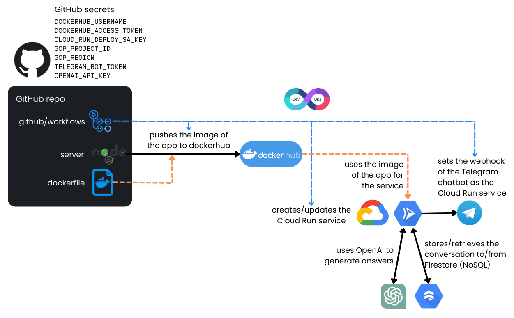

This repository contains a cloud-engineering-focused Telegram chatbot that listens for messages through a Telegram webhook, uses OpenAI for responses, and stores conversation history in Google Firestore for context retention between user interactions. You can chat with it on Telegram at t.me/AlfonsoCloudbot.
Using the Bot
- Go to t.me/AlfonsoCloudbot in Telegram.
- Click
/start.
- Ask your GCP-related question. The bot will respond, referencing any previous context in Firestore to maintain continuity.
What Is This Bot?
This bot is a Node.js application that:
- Receives messages via a Telegram webhook.
- Uses Firestore to store each user’s ongoing conversation so it can “remember” past dialogue.
- Calls an OpenAI model (currently gpt-4o-mini) to generate answers about Google Cloud Platform (GCP).
By default, it behaves like a “professional cloud engineering assistant” for GCP-related questions. However, the foundation can be reused for any domain by adjusting the system prompt (system_prompt.txt)and possibly integrating with additional knowledge sources.
How Does It Work?

- Telegram Setup
You create a bot using @BotFather in Telegram. BotFather issues a token (e.g. 1234567:ABC-xyz_UVW...) to authenticate your bot.
- Node.js Server
The server (in index.js) sets up an Express app that waits on POST /telegram/webhook. When a Telegram message arrives, it does the following:
- Identifies the user (via
chatId).
- Fetches or creates a conversation record in Firestore for that user.
- Appends the user’s message to the conversation.
- Calls OpenAI with the conversation context.
- Returns the AI-generated reply to the user and saves it back into Firestore.
- Firestore
Each user’s conversation history is stored in a Firestore document keyed by their chat ID (or a custom ID that includes their username, if available). This means the bot can recall context from previous messages whenever the user interacts again.
- System Prompt
A text file named system_prompt.txt holds the “persona” or “context” for the AI. In this project, it’s set to be a Google Cloud Platform helper. If you change this file, you can effectively alter the bot’s role or specialty.
- OpenAI GPT
The bot uses gpt-4o-mini, though it could also be adapted for GPT-4 or other models. If you need specialized knowledge, consider:
- Retrieval-Augmented Generation (RAG): Provide relevant docs to the model at query time.
- Fine-Tuning: Train a custom model using your domain data.
CI/CD with GitHub Actions & Cloud Run
This repository includes a GitHub Actions workflow that automates continuous deployment to Cloud Run:
- Docker Build & Push
Each commit to main triggers a workflow that builds a Docker image for the Node.js app, then pushes it to Docker Hub.
- Deploy to Cloud Run
The workflow then deploys (or updates) a Cloud Run service, using the freshly built Docker image.
- Auto Webhook Update
Once Cloud Run is deployed, the workflow sets your Telegram webhook to the new public URL. That way, messages route to the correct Cloud Run instance.
- CI/CD
Once Cloud Run is deployed, any changes to the code will automatically propagate to the Cloud Run service.
With Cloud Run, you pay only for what you use, and the service can scale to zero when idle.
Repository Contents
index.js – The main Node.js server code.system_prompt.txt – Holds the default persona for the bot.welcome_message.txt – Contains the message shown upon /start..github/workflows – A workflow file that automates building, pushing, deploying, and hooking the bot up to Telegram.Dockerfile – Describes how to containerize the Node.js app.
Setting Up Your Own Bot
- Service Account and Permissions
- In GCP, create or select a service account that can deploy to Cloud Run and read/write Firestore.
- Assign:
Cloud Run Admin (manage Cloud Run services)
Cloud Datastore User (read/write Firestore)
Service Account User (bind the service account to itself)
Service Usage Admin (enable APIs if needed)
- Create a Telegram Bot
- Chat with @BotFather.
- Send /newbot and follow the prompts.
- Copy the token it gives you.
- Fork or Clone This Repo
- Place your Telegram bot token in GitHub Secrets, as described below.
- Configure GitHub Secrets
Go to your repository’s Settings → Secrets and variables → Actions and create the following secrets:
- CLOUD_RUN_DEPLOY_SA_KEY: Service account JSON for deploying to Cloud Run.
- DOCKERHUB_ACCESS_TOKEN and DOCKERHUB_USERNAME: Docker Hub login details.
- GCP_PROJECT_ID: Your GCP project ID.
- GCP_REGION: The region you want (e.g. us-central1).
- OPENAI_API_KEY: For GPT queries.
- TELEGRAM_BOT_TOKEN: Bot token from BotFather.
- Commit to
main
- The GitHub Actions workflow will build your Docker image, push to Docker Hub, deploy your Cloud Run service, and update the Telegram webhook automatically.
Potential Chatbot Improvements
- RAG (Retrieval-Augmented Generation): In this approach, you store relevant documents (e.g., GCP docs) in a specialized "vector database." Whenever a user asks a question, the system searches for the most related documents and attaches them to the prompt. This way, the chatbot has additional context and can provide more accurate, detailed answers—especially for domain-specific or frequently asked questions.
- Fine-Tuning: If you have a large collection of question-and-answer pairs or any domain-specific text, you can train (fine-tune) a specialized model. This allows the chatbot to gain deeper knowledge and tailor its responses to your exact needs, beyond what a general model can offer.
- Adapting for Other Domains: You can easily transform this chatbot into, for example, a "customer support" bot, a "coding assistant," or a "legal advisor" simply by changing the contents of
system_prompt.txt (which sets the bot’s role and style) and providing any additional domain knowledge. The underlying architecture remains the same.
Enjoy exploring and customizing this chatbot for your own needs! If you have questions or want to see it live, visit t.me/AlfonsoCloudbot.